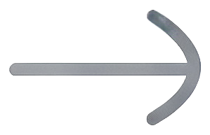

译文面板 · 返回键（方向键）符号微调
渲染图（非真机截图）｜箭头 = 真素材 ic_back_arrow.png 1:1 摆放｜虚线框 = 判定范围
现状
符号 32dp · alpha 0.62

改后（已采用）
符号 28.8dp · alpha 0.45
备选·更浅
符号 28.8dp · alpha 0.35
虚线框三格完全一样大 =
44×131dp 判定范围一点没动
；变的只有符号本体（靠内距收缩）。
符号宽度算法：44dp − 2×6dp = 32dp → 缩 10% = 28.8dp → 内距 7.6dp。